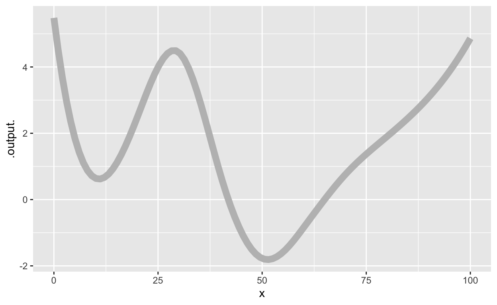
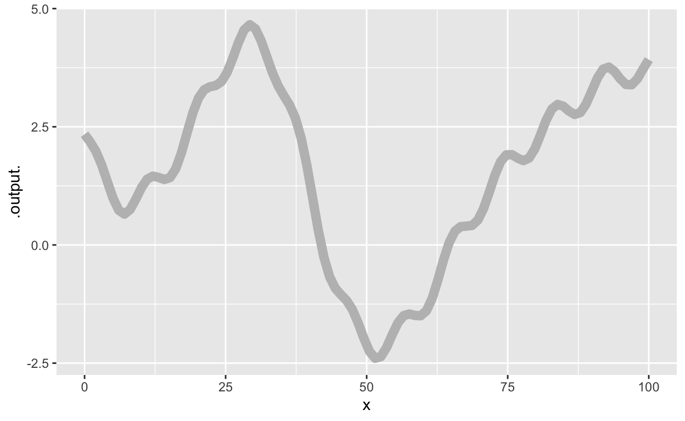
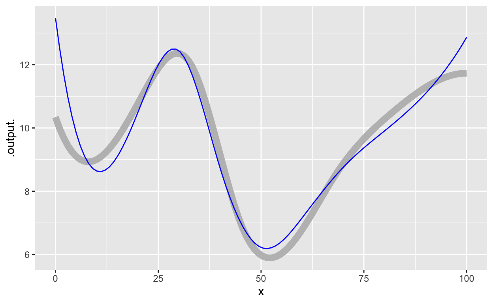
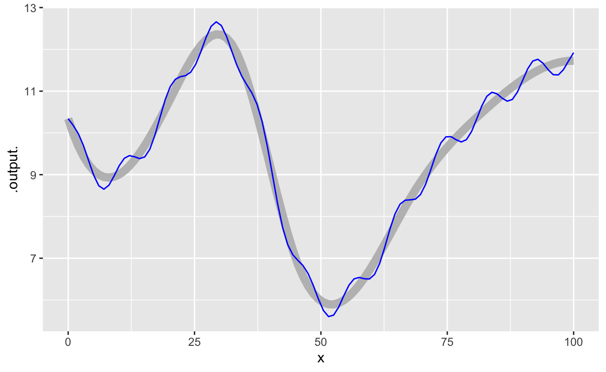

These problems deal with important aspects of calculus, but don’t use either algebra or computing. Instead, they are about ideas that can help you understand the concepts of calculus (e.g., “signed area”, dimension change) and provide insight into calculus operations in science and engineering.
At a glance, give a rough numerical value for the integral of the function shown in the plot.

## [1] 155.8927Comments
Integration is a painstaking elaboration on multiplication. To get the areas of each “box” framed by the coordinate lines, you multiply the horizontal and vertical extent of the box. In general, these quantities have dimension, for instance, “flow” (L^3 / T) and “time” (T). The “area” has corresponding dimension multiplication, for instance “flow \(\times\) time = volume” (L^3).
The “area” metaphor for integration breaks down and needs to be replaced with “signed area.” You’re counting the boxes between the function and the x-axis. When a box is below the axis it counts as negative area.
At a glance, give a rough numerical value for the integral of the function shown in the plot.

## [1] 152.3033Comments:
This function has both high-frequency ups and downs on the scale of about 10 x-units, as well as low frequency components on a scale of about 50 x-units. The “area” doesn’t depend very much on the high-frequency components because the quick ups and downs cancel each other out.
OK, a little bit of algebra … This function is a linear combination of high-frequency stuff which we might think about as \(\cos(\omega_{big} t)\) and low-frequency stuff like \(\cos(\omega_{small} t)\). Each of these is one of our basic modeling functions, so you should feel good about the following statement: \[\int \cos(\omega t) dt = \frac{1}{\omega}\sin(\omega t)\] Notice that when \(\omega\) is large, the quantity \(1 / \omega\) is small. Which is pretty much the same thing as saying “high-frequency oscillations have an integral that is small compared to low-frequency oscillations.”
The figure below shows a function \(f(x)\), drawn as a thick, gray curve. In addition, there is a second function overlaid in blue.
Your task is to decide how good a match the blue function is to the gray one, according to several different criteria. Keep in mind, a function that is a good match according to one criterion may be a bad match in terms of another criterion.
Your answers will be chosen from among:
Note that we haven’t said what the 10% or 20-30% refer to. So answers here will be “soft.” Don’t worry if you get it wrong so long as you understand the reasons we give in the feedback.


Choose the correct term for ____ in each of the following:
[This is a repeat of a problem from DD-08]
Remember our conventions for notation:
In particular, take care to distinguish between these two kinds of symbolic items:
A major source of confusion for students is that \(a\) is a constant, even though we are not yet saying specifically which numerical value that constant has. Think of \(a\) as meaning “insert constant here.” In terms of derivatives …
With this in mind, turn to our three perspectives on a definite integral \[\int_a^b f(x) dx \ \ =\ \ \left. F(x) \right|_a^b\ \ =\ \ F(b) - F(a)\]
Now turn to the entities involved in the so-called “First Fundamental Theorem of Calculus.” (“Fundamental theorem” is a highfalutin way of saying something like, “This isn’t obvious at first glance, and so you should be especially careful to memorize it so that you identify it when you see it.” Another way to state it is, “Every function is the derivative of some anti-derivative.” But you knew that already, since “every function has an anti-derivative.”)
Here are the entities involved, which you’ll recognize as a slight modification of an earlier statement:
\[\partial_u \int_a^u f(x)dx \ \ =\ \ \partial_u \left. F(x) \right|_a^u \ \ = \ \ \partial_u \left(F(u) - F(a)\right) .\] Let’s look at the right-most expression \(\partial_u \left(F(u) + F(a)\right)\) and exploit the the derivative of a sum is the sum of the derivatives. So … \[\partial_u \left(F(u) + F(a)\right) = \partial_u F(u) - \partial_u F(a) = \partial_u F(u)\]
Taking the left-most and right-most expressions in the above equation, we have \[\partial_u \int_a^u f(x) dx = \partial_u F(u)\]
The equation \[\partial_u \int_a^u f(x) dx \ \ = \ \ f(u)\] means that “differentiation undoes integration” or, as we’ve been putting it, “differentiation undoes anti-differentiation.”
Location: CalcZ/_DailyDigitals/DailyDocuments/inst/DD-142Z-Block1/142Z-Review-Block-1.Rmd Review-Block-1